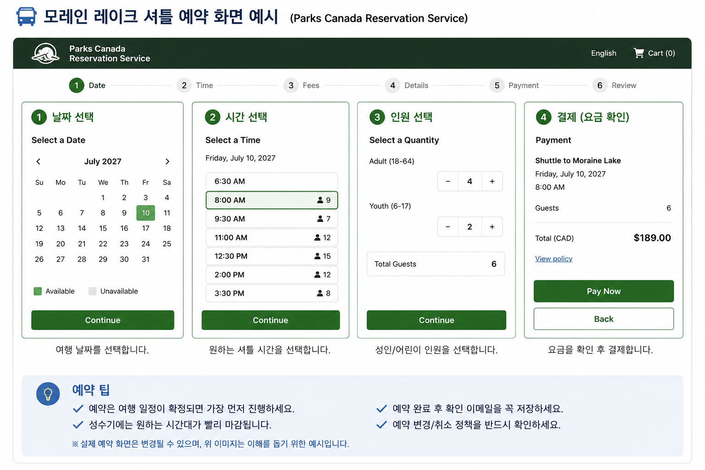
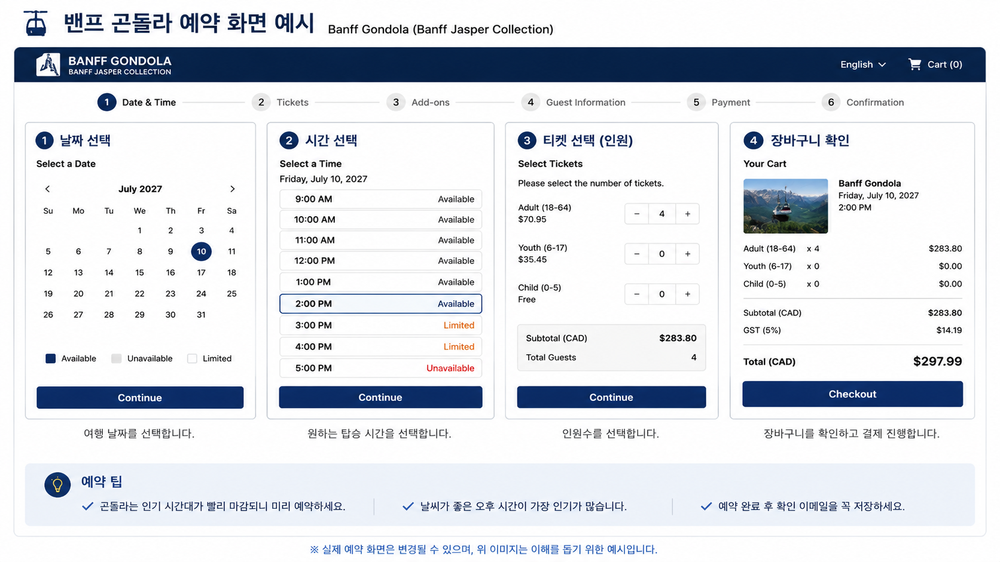

📅 예약 가이드
이번 여행에서 미리 예약해야 하는 항목과 예약 순서, 공식 예약 사이트를 한곳에 정리했습니다. 출발 전 이 페이지 하나만 확인하면 예약 준비를 모두 마칠 수 있습니다.
📌 예약 요약
이번 일정에서 사전에 예약하는 항목은 총 3가지입니다. 특히 모레인 레이크 셔틀은 성수기 예약 경쟁이 치열하므로 가장 먼저 예약하는 것을 추천합니다.
모레인 레이크 셔틀
필수
가장 먼저 예약해야 하는 항목
밴프 곤돌라
필수
원하는 시간대를 미리 확보
미네완카 크루즈
추천
오전 10:00 탑승 추천
💡 예약 우선순위
① 모레인 레이크 셔틀 →
② 밴프 곤돌라 →
③ 미네완카 크루즈
모레인 레이크 셔틀은 가장 먼저 예약하고,
밴프 곤돌라와 미네완카 크루즈는
Banff Jasper Collection 공식 홈페이지에서
함께 예약하면 편리합니다.
🇨🇦 SY-SY CANADA 2027
📅 예약 가이드
이번 여행에서 미리 예약해야 하는 항목과 예약 순서, 공식 예약 사이트를 한곳에 정리했습니다. 출발 전 이 페이지 하나만 확인하면 예약 준비를 모두 마칠 수 있습니다.
📌 예약 요약
이번 일정에서 사전에 예약하는 항목은 총 3가지입니다. 특히 모레인 레이크 셔틀은 성수기 예약 경쟁이 치열하므로 가장 먼저 예약하는 것을 추천합니다.
모레인 레이크 셔틀
필수
가장 먼저 예약해야 하는 항목
밴프 곤돌라
필수
원하는 시간대를 미리 확보
미네완카 크루즈
추천
오전 10:00 탑승 추천
💡 예약 우선순위
① 모레인 레이크 셔틀 →
② 밴프 곤돌라 →
③ 미네완카 크루즈
모레인 레이크 셔틀은 가장 먼저 예약하고,
밴프 곤돌라와 미네완카 크루즈는
Banff Jasper Collection 공식 홈페이지에서
함께 예약하면 편리합니다.
📅 예약 순서 및 준비 일정
아래 순서대로 예약을 진행하면 원하는 날짜와 시간을 확보하기 쉽습니다. 특히 모레인 레이크 셔틀은 예약 경쟁이 가장 치열하므로 가장 먼저 진행하는 것을 추천합니다.
① 모레인 레이크 셔틀
여행 일정이 확정되면 가장 먼저 예약합니다.
성수기에는 예약 오픈 후 빠르게 마감될 수 있으므로
Parks Canada 예약 일정을 미리 확인하세요.
② 밴프 곤돌라
원하는 시간대를 선택해 예약합니다.
오후 시간대를 이용하면 이후 밴프 시내 관광과 자연스럽게 이어집니다.
③ 미네완카 크루즈
추천 시간은 오전 10:00입니다.
체크인은 최소 30분 전에 완료하는 것이 좋습니다.
💡 예약 성공 팁
🕘 예약 오픈 시간 미리 확인
예약 시작 시간보다 조금 일찍 로그인하여 원하는 날짜와 시간을 빠르게 선택하는 것이 좋습니다.
💳 해외 결제 카드 준비
해외 온라인 결제가 가능한 신용카드 또는 체크카드를 미리 준비하고 정상적으로 결제가 가능한지 확인하세요.
📧 예약 확인 메일 보관
예약 완료 이메일과 예약번호는 삭제하지 말고, 휴대폰에도 캡처하여 오프라인에서도 확인할 수 있도록 준비하세요.
👨👩👧👦 인원 확인
예약 전 인원수와 연령 구분(성인·어린이)을 다시 한번 확인하여 현장에서 문제가 발생하지 않도록 합니다.
⚠️ 예약 시 꼭 확인하세요
- 여권 영문 이름과 예약자 이름이 일치하는지 확인합니다.
- 예약 날짜와 여행 일정이 정확히 맞는지 다시 확인합니다.
- 예약 완료 이메일을 반드시 수신했는지 확인합니다.
- 취소 및 변경 가능 기간을 예약 전에 확인합니다.
- 예약 시간보다 20~30분 일찍 도착하는 것을 권장합니다.
- 예약 확인서와 QR코드는 휴대폰에 저장해 두면 편리합니다.
🌐 공식 예약 사이트
모든 예약은 공식 홈페이지를 이용하는 것을 추천합니다. 예약 완료 후에는 확인 이메일을 반드시 보관하세요.
💡 예약 순서 추천
✔ 모레인 레이크 셔틀 예약
✔ 밴프 곤돌라 예약
✔ 미네완카 크루즈 예약
밴프 곤돌라와 미네완카 크루즈는 같은 공식 홈페이지(Banff Jasper Collection)에서 함께 예약하면 편리합니다.
🖥️ 예약 화면 예시
실제 예약 전에 화면 구성을 미리 확인하면 예약 시간을 단축할 수 있습니다.
🚍 모레인 레이크 셔틀

Parks Canada 예약 시스템입니다.
① 날짜 선택
② 시간 선택
③ 인원 선택
④ 결제
🚡 밴프 곤돌라 / 🚢 미네완카 크루즈

Banff Jasper Collection 예약 시스템입니다.
밴프 곤돌라와
미네완카 크루즈를
같은 사이트에서 함께 예약할 수 있습니다.
✅ 예약 완료 체크
예약이 끝났다면 아래 항목을 확인하여 출발 전까지 안전하게 보관하세요.
📧 예약 확인
- ✔ 예약 확인 이메일 수신
- ✔ 예약번호 저장
- ✔ QR코드 확인
- ✔ 휴대폰 캡처 저장
👨👩👧👦 여행 정보 확인
- ✔ 예약 날짜 확인
- ✔ 예약 시간 확인
- ✔ 예약 인원 확인
- ✔ 영문 이름 확인
📂 백업
- ✔ 가족 단톡방 공유
- ✔ 클라우드 저장
- ✔ 여행 폴더 백업
- ✔ 오프라인 확인 가능
🚗 출발 전
- ✔ 체크인 시간 확인
- ✔ 이동 시간 확인
- ✔ 주차 위치 확인
- ✔ 신분증 준비
💰 예상 예약 비용
아래 금액은 예상 금액이며, 실제 예약 시 환율과 시즌에 따라 달라질 수 있습니다.
| 예약 항목 | 예상 비용 | 비고 |
|---|---|---|
| 🚍 모레인 레이크 셔틀 | 예약 시 확인 | Parks Canada |
| 🚡 밴프 곤돌라 | 예약 시 확인 | 날짜별 변동 |
| 🚢 미네완카 크루즈 | 예약 시 확인 | 시즌별 변동 |
📝 예약 전 최종 확인
□ 해외 결제 가능한 카드 준비
□ 여권 영문 이름 확인
□ 예약 날짜 및 시간 확인
□ 예약 확인 이메일 저장
□ QR코드 캡처 및 백업
□ 가족들과 예약 정보 공유
❓ 자주 묻는 질문 (FAQ)
예약 전에 가장 많이 궁금해하는 내용을 정리했습니다.
Q. 어떤 예약을 가장 먼저 해야 하나요?
모레인 레이크 셔틀을 가장 먼저 예약하는 것을 추천합니다. 성수기에는 예약 시작 후 빠르게 마감되는 경우가 많습니다.
Q. 밴프 곤돌라와 미네완카 크루즈는 따로 예약해야 하나요?
아닙니다. 두 시설 모두 Banff Jasper Collection에서 운영하며, 같은 공식 홈페이지에서 함께 예약할 수 있습니다.
Q. 예약 확인서는 출력해야 하나요?
출력은 필수는 아니지만, 예약 이메일과 QR코드를 휴대폰에 저장해 두는 것을 추천합니다.
Q. 예약 시간보다 늦게 도착하면 어떻게 되나요?
대부분 예약 시간보다 20~30분 정도 일찍 도착하는 것이 좋습니다. 늦게 도착하면 탑승이 제한될 수 있습니다.
Q. 예약 변경이나 취소는 가능한가요?
예약 상품마다 변경 및 취소 규정이 다르므로 예약 시 안내되는 조건을 반드시 확인하세요.
Q. 인터넷이 안 되면 예약 확인은 어떻게 하나요?
예약 확인 이메일과 QR코드를 미리 휴대폰에 저장하거나 캡처해 두면 오프라인에서도 확인할 수 있습니다.